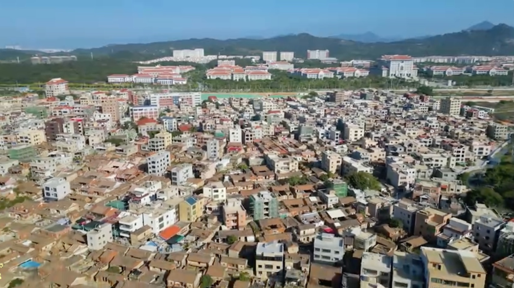
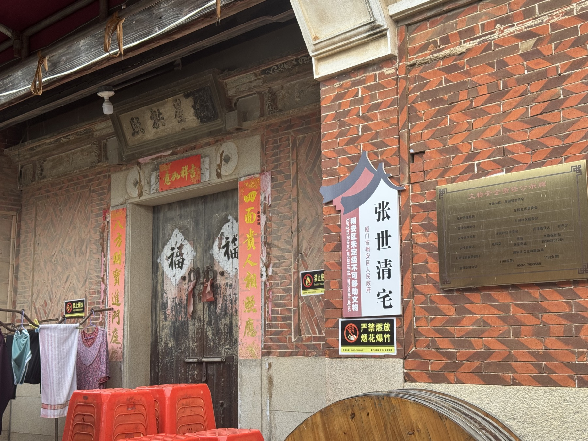
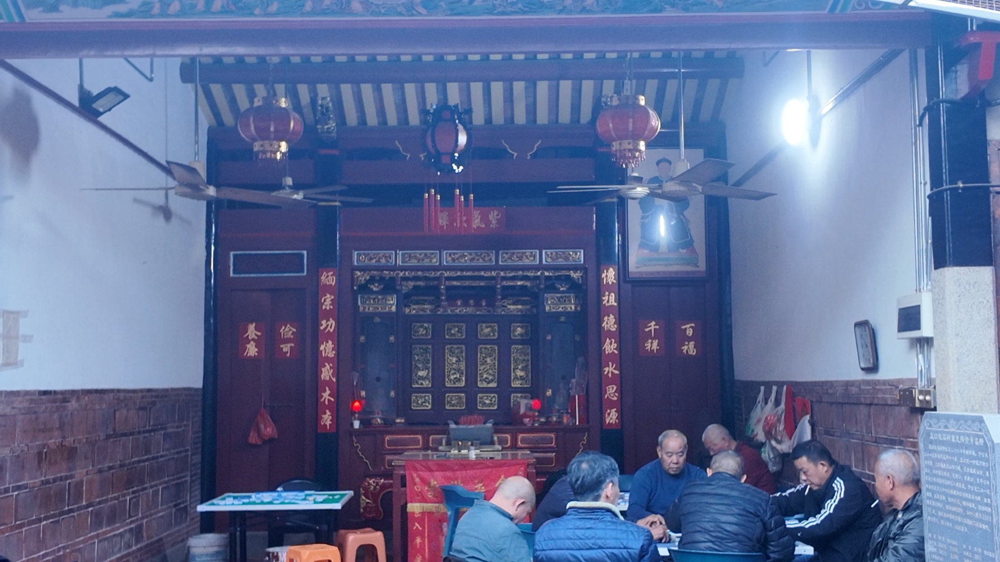

东园旧影 · 1987
MEMORY · 12 AUG 2026礼堂散场以后
小时候只记得大人们搬着长凳。很多年以后再听到拍板，才知道那晚唱的是南音。
东园南音数字记忆档案 DY · 2026
Walk into a place.
Listen to its memories.
一处地方从来不只属于此刻。
声音仍在旧墙与水渠之间回响。
从空间进入记忆。选择一处地点，听见它未曾消失的声响。
旧墙之内，日常排练让古老声腔继续发生。
写下一句话。系统会从记忆的地点、情绪与时间中，选择一段南音式旋律回应你。
个人讲述被听见，也可能成为下一条集体档案。



小时候只记得大人们搬着长凳。很多年以后再听到拍板，才知道那晚唱的是南音。
声一起，村子就不只是一个地方。它会变成许多人共同记得的样子。NANYIN · ORAL HISTORY 04
奶奶总在这里放慢脚步。
“我记得书院窗外的风。”
父亲站在最后一排，怀里抱着琵琶。照片背面只写了两个字：东园。
你走过的路径，已经成为这座记忆档案的一部分。
回到地图，点击场景中的记忆热点。